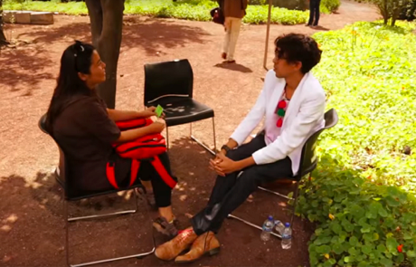

Biblioteca Vasconcelos
No romance distópico Farenheit 451, de Ray Bradbury, uma sociedade altamente anti-intelectual começa a queimar todos seus livros. Preocupados com a perda do conhecimento, da cultura e da arte, uma sociedade isolada começa a memorizar livros inteiros e os passa adiante entre si, como uma grande biblioteca humana. Cada um se torna portador de uma história.
Caminhando no sentido contrário, mas com uma ideia parecida, uma biblioteca, preocupado em ser mais do que um prédio e um acervo de livros, começa a convocar pessoas de sua comunidade para contar suas histórias. “Todo mundo tem uma história a contar – que podem ser muitas”, aponta, em vídeo, Ramon Salaberria, organizador da Biblioteca Humana da Biblioteca Pública de Vasconcellos, na Cidade do México.
“A Biblioteca Humana encara o público como um acervo, como uma parte de seu ser. Não somente como uma pessoa que recebe da biblioteca, como também alguém capaz de presentear a biblioteca e seus usuários”, pontua Daniel Goldin.
Surgida na Dinamarca, no ano 2000, para confrontar estereótipos, a ideia foi transformada em um programa da Biblioteca de Vasconcelos, que entre 2014 e 2016 realizou cinco encontros. Os eventos são organizados por uma equipe de bibliotecários que convidam personalidades conhecidas, de acordo com temáticas estabelecidas. Certas edições também abriram chamamentos pelas redes sociais.
Cada pessoa ganha um título e uma resenha e é levada a um jardim, onde poderão escolher que livro querem “tomar emprestado por 20 minutos”. As conversas não seguem nenhum roteiro específico e podem surgir em diálogo com os leitores.
Combater preconceitos, reviver memórias
A primeira edição da Biblioteca Humana foi realizada durante a Semana da Igualdade e tratou de discutir estereótipos de gênero. Histórias de um homem que não podia dançar, de um pai gay, de uma mulher da etnia mixe que contou suas dificuldades para estudar foram divididas no espaço da biblioteca.
A segunda edição tratou da história do bairro de Guerreiro, vizinho à biblioteca. Nela, os livros convocados trouxeram as memórias da região antes das grandes obras de infraestrutura que mudaram a cara do local. A terceira edição trouxe 12 homens para contar suas histórias de pais, discutindo os desafios para encarar a paternidade.

Atividades da Biblioteca Humana são sempre realizadas ao ar livre.
Ainda na tarefa de recuperar e contar memórias, a quarta edição da biblioteca trouxe pessoas que vivenciaram o terremoto de 1985, que vitimou entre 10 mil e 40 mil pessoas na capital mexicana, derrubando mais de 400 edifícios. Para esse dia, as pessoas trouxeram suas histórias de sobrevivência a um dos dias mais trágicos da história do país.
A quinta edição, em fevereiro de 2016, trouxe 20 línguas maternas: idish, mixe, totonaco, árabe, finlandês, língua de sinais, flamengo, nbele e diversas outras línguas originárias do país foram faladas por uma tarde na Biblioteca de Vasconcelos.
Atividade acessível
“Não é preciso cenários, grandes orçamentos ou alugar coisas. Qualquer biblioteca de qualquer cidade pode propiciar este intercâmbio de ideias de reflexões de nos aproximar uns dos outros”, afirma Salaberria. Todas as participações da Biblioteca Humana são voluntárias e facilmente replicáveis em qualquer lugar aberto às histórias de seu território e com pessoas desejosas de compreender o outro.
REFERÊNCIAS
Texto disponível em: https://educacaoeterritorio.org.br/experiencias/biblioteca-humana-de-vasconcelos/
(Com informações do site registromx)